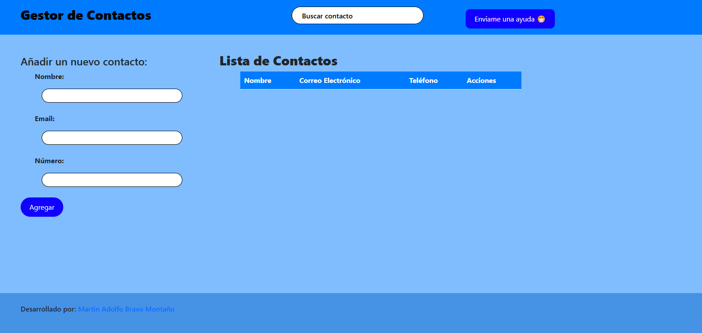
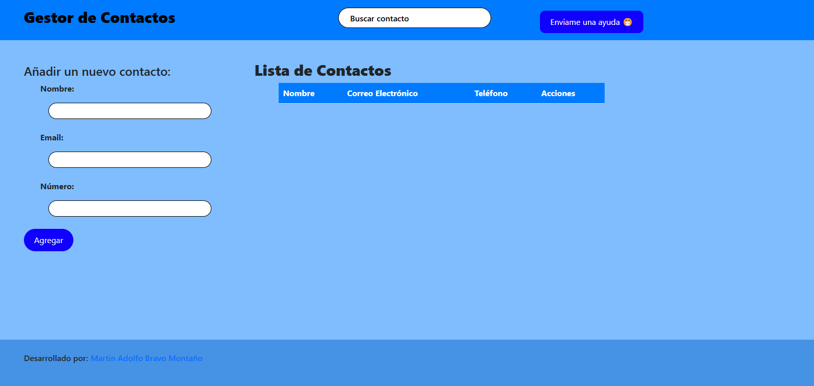

Gestor de Contactos
Permite a los usuarios gestionar contactos almacenados localmente con localStorage.
Gestor de Contactos
Permite a los usuarios gestionar contactos almacenados localmente con localStorage.
¡¡Hola!!
Me llamo Martin, soy un desarrollador web junior con experiencia en el desarrollo de sitios web y aplicaciones web.